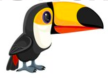

Producto 1
Los tucanes son aves de plumas y pico de colores muy llamativos. Llegan a medir hasta 65 centímetros y pesan de 130 hasta 680 g. Su pico es largo con una longitud aproximada de 20 cm y alcanzando su talla definitiva después de varios meses.
Producto 2
El oso panda gigante es un animal grande, parecido a un oso, con pelaje blanco largo, denso y de aspecto lanoso; las patas, los hombros, las orejas y la zona de los ojos son negras. La cola es ancha y corta .


Producto 3
El oso más pequeño, el Sun Bear de Asia, pesa apenas 27-65 kilos y mide 120-150 metros de largo. Sus orejas, ojos y cola son pequeñas. Están cubiertos por pelaje largo abundante y áspero que puede ser de color marrón, negro, blanco y manchado.